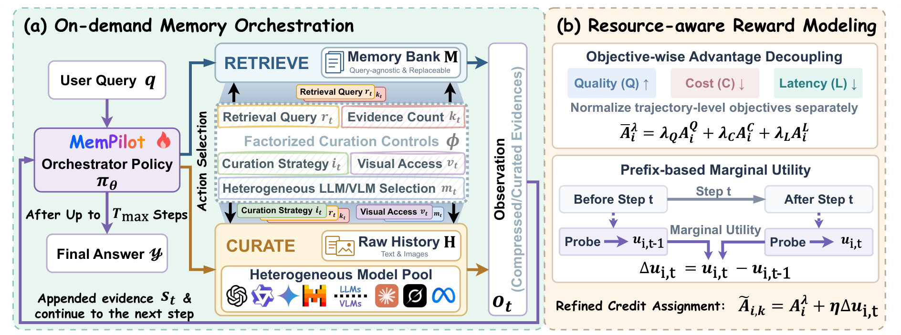
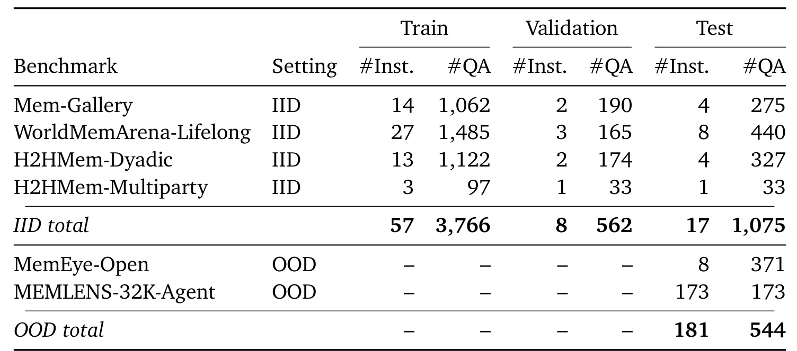
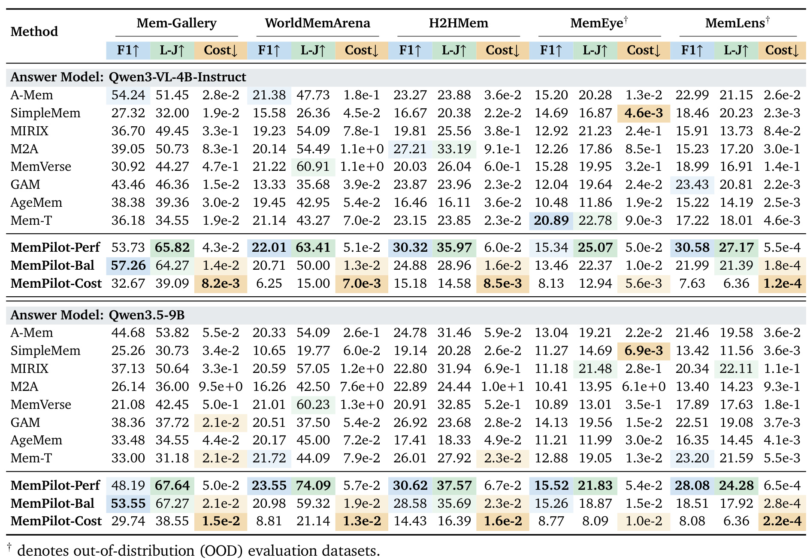
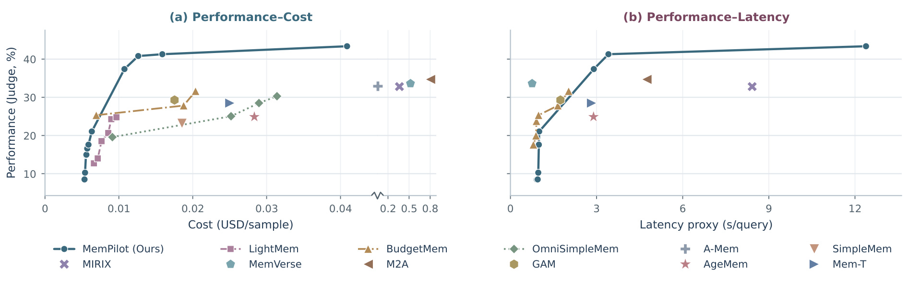
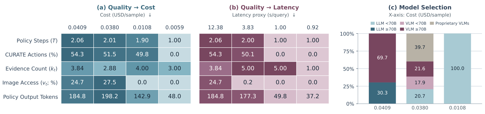
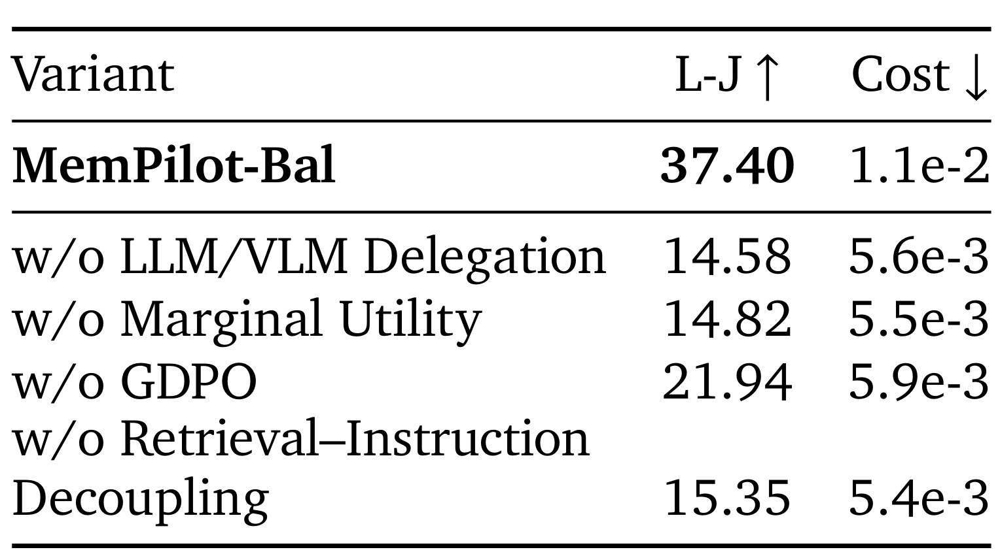
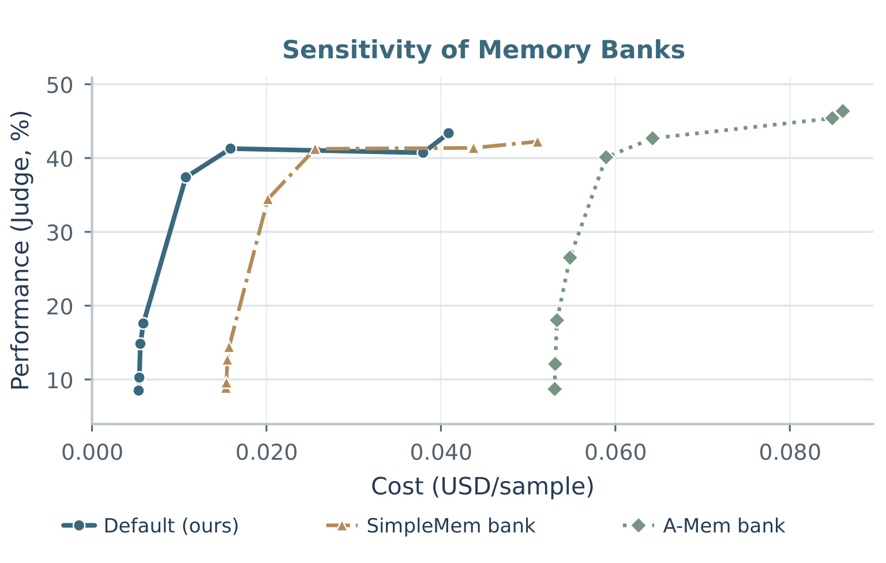

MemPilot：按需编排多模态记忆整理
论文： MemPilot: Orchestrating On-Demand Multimodal Memory Curation for LLM Agents
作者： Haozhen Zhang、Haodong Yue、Quanyu Long、Jianzhu Bao、Qingyuan Liu、Tao Feng、Bohan Liu、Weida Liang、Wenya Wang。
机构： 南洋理工大学；合作机构清华大学、伊利诺伊大学厄巴纳香槟分校。
来源与日期： arXiv:2610.06830，v1于2026-10-05 17:58:06 UTC公开，即北京时间2026-10-06 01:58:06；PDF首页标注2026-10-06。访问核验日期2026-10-07。
代码与项目： 官方代码与作者项目页已核验HTTP 200；本次未运行代码。
阅读范围： 34页全文，包括附录A–F、所有Figure 1–6与Table 1–6。本文数值取自主文与附录；迁移讨论明确属于研究判断。
1. 背景和问题
论文要解决的问题是：如何根据当前查询需要和质量、成本、延迟偏好，灵活编排对多模态交互历史的按需整理，而不被固定流程、预算档位和单一模型后端限制？
这句概括直接来自摘要及引言。Agent记忆系统保存过去的对话、经历和视觉内容，希望在未来的问题中复用这些信息。传统做法是在问题到来之前，把历史提取成记忆条目、事实、摘要或其他结构。这个步骤本身有价值：比起每次把完整历史塞给模型，它通常更快，也方便持久化和检索。但问题没有出现时，系统无法确知哪些细节会成为答案的决定性证据。把一段购物讨论压缩成“用户最终选了第二条裙子”，可能保留选择行为，却失去第二条裙子的图片编号、颜色或袖型关联。未来问题若只问是否买裙子，摘要足够；若问具体购买哪张图片对应的裙子，相同摘要就可能不足。
因此，记忆损失并不等于摘要做得差。压缩为了省资源必须有所舍弃，未来任务又不确定，一份固定摘要难以同时服务所有粒度的追问。另一端的全量保留同样存在问题：保存原始数据不代表每个问题都应重新读取全部文本和图片。如果答案已经藏在一个记忆条目的图片说明中，再调用大型视觉模型去读原图，便产生没有必要的推理开销。MemPilot关注的正是这两端之间的运行时决策：什么时候使用已有压缩记忆，什么时候回查原始历史，原始材料需要多少，谁来加工这些材料，图像像素是否真的值得访问。
引言归纳了既有运行时记忆适配的三项不足。第一，控制结构往往固定：即便系统能根据查询抽取新证据，允许的操作及顺序仍由人工流程、启发式或离散预算档位确定。第二，资源目标不完整：有些方法压token，有些方法省美元，但用户等待时间很少直接进入训练目标。第三，整理后端固定：不同文本模型和视觉语言模型在能力、价格和速度上差异很大，如果所有问题始终使用同一后端，就很难根据证据模态和问题难度调整计算资源。这三点共同缩小了可达的折中空间，而不是单纯造成某个数据集上的准确率下降。
论文把“记忆整理”看成多步计算分配任务。这里的整理包含先检索相关历史，再按问题指令提取、计数、关联或压缩证据。它与最后回答问题是两个角色，也与离线构建记忆是两个阶段。低成本查询可能检索一次已有记忆后直接回答；需要精确计数时，先检索再把原始文本交给小模型；需要恢复图片与偏好关系时，再打开视觉输入并选择足够强的VLM。每个动作返回新的文字证据，使下一步决策有机会修正最初的选择。
相较于普通模型路由，这里还有更复杂的状态依赖。一次性路由通常为整个查询选择一个模型，MemPilot则可以先读便宜证据，再决定是否委托，以及委托的具体范围。一次便宜调用有时发现问题已解决，有时暴露缺口，从而改变后续投入。最终资源消耗取决于整条路径，包括编排模型自身产生的推理和动作token。因此，不能只比较外部模型单次API价格，也不能把“调用更小模型”视为全部方法。检索深度、处理指令、模型和模态是互相配合的控制维度。
文章的实验任务是多模态记忆问答，主要检验交互历史中保留的信息能否支持回答。它没有进行真实长期推荐平台上线实验，也没有证明用户长期满意度改善。对推荐研究者而言，论文的直接价值是展示如何按任务获取不同精度的历史证据；把它迁移到推荐还需要重新定义奖励、隐私规则和实时服务约束。对LLM工程而言，直接相关的是持久Agent、个性化助理、带图片的长期对话和可控资源预算。把“所有信息预先整理好”改为“保留快速视图，遇到具体问题时补充必要细节”，有可能减少不可逆的压缩损失，但这种可能必须用准确率与资源共同核验。
还有一个需要提前建立的概念边界：偏好是训练与比较的控制变量，不是论文证明了任意用户自然语言要求都可直接映射到最优策略。原文固定质量权重为一，并改变成本和延迟的权重形成多个运行点；主表的Perf、Bal、Cost分别代表不同优化侧重。它们不能被拼成一个同时拥有最高分、最低价格和最短延迟的模型。论文自己把偏好校准列入未来工作，所以“灵活”指的是已经暴露并学习多种控制，不等于部署者无需调参。
最后，多模态控制还涉及证据的可达性。原始图像并非始终交给编排者，而是图像标题参与文本检索，只有选择支持视觉的外部模型且打开图像输入时，像素才会被处理。编排者始终是文本模型，观察的是整理后返回的文字。这一设计避免把“会决定何时看图”误写成“编排模型自身具备视觉理解能力”，也为隐私、安全和成本审计提供了清晰边界：可以追踪哪一步把哪些原始资料委托给了哪个后端。
引言与相关工作还强调，运行时适配不是从零开始的新概念。已有方法研究即时整理、查询时证据蒸馏、动态记忆生成或者根据反馈更新经验效用；MemPilot的定位是把这些能力中的访问和处理选择统一放入编排，而不是宣称首次提出查询相关记忆。因此读贡献时应该检查它增加了哪些自由度：检索与原始回查是不同操作，模型异构是独立维度，视觉访问又与模型身份分开。能够分别控制这些维度，才可能回答为何同样一份历史在不同问题下应有不同处理路径。若只有一个“预算高低”的参数却无法改变信息访问方式，系统仍可能在无关图片上花钱，或在关键细节被压缩后无法恢复。论文的研究问题来自这种结构性的选择限制，后文实验也应围绕资源前沿与动作行为验证，不能只看一个平均分就结束阅读。
2. 方法
2.1 双视图记忆和逐步编排
MemPilot保留两种历史视图。记忆库代表已经构建的、与具体查询无关的压缩记忆，原始历史则保留更细粒度的文本及图片上下文。默认记忆库使用LLMLingua-2以零点四压缩比例构建，论文同时允许接入A-MEM、SimpleMem等已有系统。原始对话按约二百五十六token分块，但对话轮次是原子单位：一轮不跨块，超长单轮单独保留，图片编号、图像标题与所属轮次一同保存。两个视图各自建立文本向量索引，避免把压缩版本检索结果当成原始版本结果。
给定当前问题，编排者结合过去动作和返回证据选择新动作。原文式一至三可以合写为下面的状态转移，其中新证据追加到后续上下文： 符号解释： 查询记为$q$，步骤为$t$，策略为$\pi_\theta$，状态为$s_t$；$a_{<t}$、$o_{<t}$分别是之前动作与文字观察。动作类型$z_t$有Retrieve和Curate两种，$\phi_t$是参数。$R_{\mathcal M}$从压缩库$\mathcal M$做语义检索，$C_{\mathcal H}$从原始历史$\mathcal H$取证并委托整理。文字观察$o_t$改变下一步决策输入。最多若干轮后生成最终答案，而不是固定检索一次。

Figure 1左半部分展示查询如何先进入编排策略，再分流到压缩记忆Retrieve或原始历史Curate。两条分支都把文字证据返回右侧Observation，证据再进入下一轮状态，所以这是具有反馈的循环。中间的因子化控制明确列出检索词、证据量、整理策略、视觉访问和模型选择；其中已有记忆检索只需要前两项，原始历史整理增加后三项。图中的LLM与VLM标识代表可替换处理池，图片并没有直接输入编排策略。这个区别决定了系统能力来自编排与被委托者的组合，不能把原图处理能力归给纯文本策略。
右半部分则对应学习层，而不是推理中的另一条工具链。上方先分别估计质量、成本和延迟优势，再按偏好汇合；下方在整理前后各做一次短答案探测，以质量变化估计该阶段贡献，最终给相关动作token更细的信用。图把“该调用谁”和“调用是否有用”连接起来：策略的动作空间足够细，训练信号也需要能区分不同动作带来的增益。若只有最终得分，同一轨迹中的无效检索和真正找到答案的调用会收到相似反馈。图中前后探测并不意味着线上每次回答都必须产生多个答案，它是训练阶段辅助计算；实际资源报告排除这些训练探测。因此，图的左边定义运行时机制，右边定义使机制学会不同资源偏好的方法，两者应分别理解。
默认编排者是Qwen3-4B-Instruct，采用文本检索嵌入Qwen3-Embedding-0.6B。图片标题用于文本相似度召回，原图仍与历史块关联。检索每次至多五条，推理最多六轮，最多并发两个独立操作。允许并发说明“步骤”不是API调用数量的同义词：同一阶段可能有多个调用，其反馈一起进入上下文。最后回答也可以换成独立、未经这套RL训练的模型，实验因此能把记忆整理效果与策略自身答案生成能力部分分开。
2.2 因子化整理与异构委托
论文式六给出了真正可学习的控制参数。检索已有记忆只指定需要什么和多少，委托原始历史还需要指令、后端与是否开放图像： 符号$r_t$是检索查询，$k_t$是证据条数，$i_t$是整理指令，$m_t$是外部模型选择，$v_t$是视觉访问开关。这里不是把每个问题强制经过五个阶段，而是一个动作同时指定若干维度。Retrieve没有外部整理模型费用，但编排生成和检索后阅读仍消耗资源。Curate先从原始历史取相似块，再由$m_t$按$i_t$返回文字整理结果；若选择视觉后端且$v_t$开启，才同时发送原始图像。
将检索查询和整理指令分开是一个容易低估的细节。比如寻找“用户看过的裙子选项”是定位证据，而“从这些选项中数出牛仔衬衫裙数量”是处理证据。若把计数命令直接当检索词，语义索引可能更关注“数量”“数出”等动作概念，反而错过描述物品的历史；若仅把物品名交给外部模型，又可能缺少任务约束，返回无关摘要。分开后，召回服务于覆盖，指令服务于答案所需变换。Table 2中的检索指令解耦消融检验的就是这种区分，而不是换一种漂亮的提示写法。
模型池包含六个文本LLM和六个VLM，跨度从三十亿参数文本模型到大型视觉模型及商业后端。策略看到匿名模型ID与参数规模、模态支持等轻量描述，避免必须靠模型品牌名决定路由。能力、价格和延迟差异给策略留下选择空间：计数且无需像素可以选小文本模型，恢复颜色与图片编号关系可选VLM。价格最低的模型不一定延迟最低，带图的调用也不一定总是更准，所以委托策略需要在不同目标上学习，而不是写死“简单用小模型、复杂用大模型”的规则。
附录C提供了三个顺序案例。野餐垫图像问题仅通过压缩记忆中带编号的标题就得到D13:IMG_001，因而不委托。裙子计数问题先取三条已有记忆，再把原始文本交给三十亿参数文本模型，关闭图像，枚举出五个选项并返回数字五。最后一个裙子购买问题，压缩记忆只保留“第二个蝴蝶袖”但没有对应图片ID，策略扩大到五条原始证据、选择视觉后端并开启图像，恢复D8:IMG_007。它们说明更强模型和视觉访问是有条件的修复手段，不是固定每问必做的工作。案例是作者展示的成功路径，不能代表所有查询的正确率分布。
2.3 资源奖励和分目标优势归一化
轨迹具有质量、美元成本、延迟三个目标。质量奖励由任务答案分数给出，成本和延迟取负值，使所有目标都按越大越好优化。成本包含编排者生成及委托调用两部分；附录式十四把两部分均转换成token价格： 轨迹记为$\tau$，编排生成段集合是$\mathcal S_\pi$，外部调用集合是$\mathcal E$；$n^{\rm in}$、$n^{\rm out}$是输入、输出token数，$p^{\rm in}$、$p^{\rm out}$是每百万token美元价格，$m_c$是该次后端。百万分之一因子完成单位换算。编排者代理价格为输入零点零五、输出零点二五美元每百万token；API若返回准确费用，则覆盖静态估算。初始prompt只计一次，新增观察计增量输入，历史prompt不重复收费，对应理想轨迹内KV前缀复用，不能直接当真实服务账单。
延迟用校准的确定性代理，而非每次API实际墙钟。单调用代理由固定开销、输入预填充、输出解码和图像项组成；同阶段并发调用取最大值，跨阶段求和： $b$是秒级固定调用开销，$a^{\rm in}$、$a^{\rm out}$分别是每输入、输出token秒数，$a^{\rm img}$是每图秒数；$\mathcal E_t$是阶段$t$并发外部调用。文本模型图像项为零。系数来自固定provider、禁fallback、cache-busting重复请求的中位数校准且约束非负。这种代理降低网络负载噪声，但只反映校准范围内的平均行为，不可据此声称线上尾延迟下降到某个秒数。
各查询采样四条轨迹。把美元和质量直接加权后统一归一化，会使尺度及方差较大的目标吞掉其他信号。论文采用GDPO启发的分目标归一化，对质量、负成本、负延迟分别计算组内优势，原文式九为： 第$i$条轨迹的目标$j$奖励为$r_i^j$，$\mu_j$与$\sigma_j$是该目标在轨迹组内的均值和标准差，$\epsilon_{\rm norm}$避免除零。它让策略先知道自己在每一目标上比同组其他路径好多少，再决定部署偏好应该重视什么。这里的优势是相对信号，并不把美元自动换算为用户可理解的价值单位。
随后按偏好加权，再做批次归一化： $\lambda_Q$、$\lambda_C$、$\lambda_L$分别控制质量、成本和延迟侧重，全文固定$\lambda_Q=1$；$\mu_{\bar A}$、$\sigma_{\bar A}$是批次统计。PDF未明确列出主表三种偏好的具体成本、延迟系数，不应替作者补值。改变系数得到不同策略与运行点，证据不支持把它说成一个单一策略无需再训练即可随用户实时任意切换权重。
得到优势后使用裁剪的GRPO目标更新策略，原文式十一为： $k$是策略token位置，$\rho_{i,k}$是当前策略相对rollout旧策略的概率比，$\epsilon_{\rm clip}$限制更新幅度，$\beta$控制与参考策略$\pi_{\rm ref}$的KL正则。主设置裁剪系数零点二，KL系数零点零零一。若动作格式非法或没有调用记忆工具，任务奖励为负一，资源优势置零；否则失败答案仍承担资源惩罚。这防止系统靠不输出合法轨迹来冒充低成本。
2.4 前缀探测与阶段信用分配
轨迹级优势仍有信用归属问题：一条最终回答正确的路径里，某个动作可能无用，另一动作才提供决定证据。MemPilot对每个整理阶段前后已有上下文做短答案探测，不再执行未来整理，以答案质量差刻画阶段贡献： $\hat y_{i,t}$是第$i$条轨迹在阶段$t$前缀上直接生成的贪心短答案，$Q$是对参考答案的质量打分，$u$是探测质量，$\Delta u$是该阶段边际效用。探测既可以得到正增益，也可得到负增益，不是简单把有新证据的调用全部奖励。首次整理前也有基线探测，避免首阶段只有后测而无法比较。
该差值只加到引发该阶段的推理与动作token，原文式十三为： 集合$S_{i,t}$包含相应整理响应之前的策略推理和动作token，$\eta$为边际信用权重，默认零点五。其他token保留原来的轨迹优势。并发动作共同观察，视作同一因果阶段，故探测估计的是阶段整体收益，不是精确隔离每个并发调用的效应。成本与延迟已有轨迹归属，所以边际探测只评价质量，避免资源被重复扣分。
附录Algorithm 1说明探测使用相同rollout策略贪心生成，共有阶段数加一份前缀答案，可以并行提交并利用共享前缀缓存。无整理阶段、非法轨迹或任何探测失败时回退到原轨迹优势。辅助探测不计入推理成本、延迟或外部调用统计，因此额外训练成本不能从运行时表格推算。方法意义在于让细粒度动作空间得到细粒度学习信号，但答案探测差值仍是启发式边际估计：证据之间可能有互补，先后顺序会影响收益，某阶段暂时不提高短答案得分也可能为下一阶段准备必要线索。
3. 实验结果
3.1 数据与评估口径
五个多模态Agent记忆基准为Mem-Gallery、WorldMemArena、H2HMem、MemEye和MemLens。前三者训练验证测试按会话实例七一二切分，H2HMem覆盖双人和多人两类；WorldMemArena只使用lifelong子集，按类别场景分层，每个问题只能访问其检查点之前的累计历史。相同会话派生的问题不会跨切分，减少共享历史泄漏。两套分布外基准仅用于测试，不参与策略训练或模型选择。清洗后训练三千七百六十六问、验证五百六十二问、域内测试一千零七十五问，域外测试五百四十四问。

Table 4把实例数与问答数分别列出，说明它们不能混用。域内测试只有十七份历史，却派生出一千零七十五个问题；其中Mem-Gallery四份历史二百七十五问，WorldMemArena八份四百四十问，H2HMem双人四份三百二十七问，多人一份三十三问。MemEye开放问答有八份场景历史、三百七十一问，MemLens则以每问特定三十二K历史为实例，因此一百七十三实例对应一百七十三问。表格可以解释为何某些数据集的成本很高而另外一些极低：原文成本以独立数据集会话对为分母，具有多问同历史的数据集会在同一实例上累加更多推理支出，不能把跨集差异都解释成问题难度或者模型能力。还需注意这些数据已经过滤拒答及部分不合格式问题，所以结果不等于官方完整基准原分布成绩。
具体过滤包括MemEye排除选择题，只保留开放问题；MemLens官方Agent子集原一百九十五问，删除拒答问题后为一百七十三。Mem-Gallery和H2HMem也排除拒答，后者删除无有效记忆对话以及参考答案不能满足独立Yes/No格式的Conflict Detection问题。参考答案不会参与预处理、索引或检索，但用于RL奖励及训练探测，这两个阶段必须区分。评估质量使用F1及GPT-4o-mini裁判分数，裁判只看预测与参考答案，移除了问题、关键记忆点或旧答案等某些官方字段，属于经过答案侧适配的评估口径。
成本总和除以独立dataset-conversation样本数，延迟总和除以问题数，外部调用数量又按样本数汇总。Table 1的Cost及Figure 2横轴因此应读作USD/sample；“每问美元”是不正确的转述。QA成本包含编排推理、外部整理模型及可选独立回答模型，不含离线记忆构建、裁判或训练前缀探测。延迟为确定性校准代理，表格中的秒数也不等于真实端到端服务等待时间。这种口径可以用于作者设定中的方法比较，却不足以给出实际生产费用或延迟承诺。
主比较把整理后上下文交给Qwen3-VL-4B-Instruct或Qwen3.5-9B独立回答器，删除RL策略最终答案、推理、动作参数和系统指令，仅保留问题及搜集证据；回答器自身成本延迟计入总量，但其共同回答调用不算路由外部调用。策略通过VeRL训练，每问四条rollout，温度一，batch三十二，学习率百万分之一，三轮训练；外部输出最多五百一十二token，温度零。评估每问一条贪心轨迹，prompt和response各四千零九十六token，最多六轮。这些设置控制了路径长度，却不保证更长历史、更大并发或真实线上频率下相同收益。
3.2 两种回答模型下的主结果
作者比较文本记忆A-MEM、SimpleMem，运行时适配GAM、AgeMem、Mem-T及多模态记忆MIRIX、M2A、MemVerse。LightMem、BudgetMem、OmniSimpleMem另外进入资源前沿比较，避免只选一个任意budget点形成不公平的主表。MemPilot-Perf重质量，Bal重折中，Cost重费用；这些都是独立运行点，必须以相同回答器、基准和资源口径逐项比较。

Table 1上半部分使用Qwen3-VL-4B回答器，Perf在五基准L-J依次为六十五点八二、六十三点四一、三十五点九七、二十五点零七、二十七点一七。Mem-Gallery上的Bal为F1五十七点二六、L-J六十四点二七、成本零点零一四美元每样本；Perf的F1为五十三点七三、L-J六十五点八二、成本零点零四三。也就是说Bal在这个F1上更高，而Perf语义裁判更高，不能称Perf所有指标最优。WorldMemArena的Bal只得L-J五十，低于MemVerse的六十点九一，但前者成本零点零一三、后者一点一美元；Perf以零点零五一美元获得六十三点四一。表格直接展示质量与费用权衡，而不是单一排行榜。
同一回答器下，极省成本的策略付出明显质量代价。WorldMemArena从Perf的F1二十二点零一降到Cost的六点二五，成本从零点零五一降到零点零零七；MemLens的L-J从二十七点一七降到六点三六。MemEye上Mem-T的F1二十点八九高于Perf十五点三四，所以语义裁判领先并不意味着每个离散词重合指标都领先。下半部分改用Qwen3.5-9B时，Perf的五集L-J是六十七点六四、七十四点零九、三十七点五七、二十一点八三、二十四点二八；Bal对应六十七点二七、五十九点三二、三十五点六九、十八点八七、十七点九二。不同回答器下趋势有延续，但具体基准优势及成本改变，记忆证据与回答器能力仍然相互作用。
这里最值得保留的是受控回答器评估的设计。由于策略本身经过RL，若只评价策略最终答案，很难知道收益来自更好证据还是学会答题。把同一证据交给非RL回答器，可以削弱后一种混淆。不过外部模型仍能返回有利的文字处理结果，评估也只做一次贪心轨迹，尚未给出多seed或置信区间。在小规模历史实例和共享裁判的设置里，绝对分数应连同样本与裁判协议理解，不宜直接宣称对所有长期Agent任务具有稳定统计优势。
3.3 性能成本延迟前沿
偏好扫描的意义是比较整个可达区域。Figure 2以五基准宏平均L-J为纵轴，把改变权重或预算得到的运行点画成前沿。连线只连接Pareto点，淡色点显示其他设置，固定配置基线常只对应一个点。由于价格横轴包含折轴，不能从直线距离直观推断差价倍数。

Figure 2左图显示MemPilot在作者评估的多数费用范围形成更高的质量前沿，低资源端仍能覆盖竞争点，而资源增加后可以继续提升。LightMem、BudgetMem与OmniSimpleMem并非都完全无效，它们也提供多个点，只是本实验中可达范围及质量不同。右图把横轴换成每问题延迟代理，观察到MemPilot也覆盖从轻量到重质量的区间。MemVerse在相对低延迟端仍有不错质量，却在左图费用很高，说明费用与延迟是不同资源目标：一个快速但昂贵的后端可能缓解等待，却不能满足账单约束。图支持在给定模型池、奖励与样本协议下学出更宽折中区域，不支持真实硬件上每一服务负载都由相同前沿包络，也没有直接给出多目标最优性的数学证明。
为了判断前沿究竟通过什么操作形成，作者统计步骤、Curate比例、证据数、图像访问和策略输出token。若只看到更低成本，无法排除策略不调用任何工具或频繁放弃回答。行为表与格式门控共同提供了更细证据，不过最省资源处确实可能退化到一次直接检索，这也是质量显著下降的原因之一。

Figure 3的费用方向从零点零四零九走到零点零零五九美元每样本，平均步骤由二点零六降到一点零零，Curate比例由五十四点三降到零，输出token由一百八十四点八降到四十八。但中间证据数为三点八四、二点八八、四、三，图像访问先从二十四点七升到二十七点五再归零，显然不是把每个旋钮单调拧小。延迟方向从十二点三八降到零点九二代理秒，证据数也经历三点八四、五、五、一。模型选择面板中，费用零点零四零九时大型VLM占六十九点七百分比、大型文本LLM占三十点三；到零点零一零八时显示路由全部转向低于七十B的文本模型。图中“全部”只针对显示点和被路由调用的模型份额，不代表所有问题都一定委托小模型，不能与Curate零比例混为一谈。附录Figure 5逐基准展开保留了类似趋势，同时说明证据深度和模态选择有局部差异。
3.4 消融与记忆库兼容
消融使用Qwen3-VL-4B独立回答器，五基准宏平均。作者移除异构委托、前缀边际效用、目标优势解耦及检索指令解耦，检验框架是否只因额外计算而提高质量。

Table 2完整Bal的L-J为三十七点四零、成本一点一乘十的负二次方。移除LLM/VLM委托后分数十四点五八，移除边际效用十四点八二，移除GDPO式目标解耦二十一点九四，移除检索指令解耦十五点三五。几种变体费用都更低，约五点四至五点九乘十的负三次方，说明省资源与高质量不是自动相容。特别是GDPO消融仍高于其他删减，但相对完整策略下降十五点四六个L-J百分点，分目标学习信号的重要性在本设置下有直接证据。应避免把这些下降解释成纯粹固定预算因果效应，因为删组件同时改变运行行为和费用，没有把每个消融严格对齐到相同花费。附录Table 6进一步显示WorldMemArena完整五十、无边际效用九点七七，无GDPO二十一点三六；MemLens完整二十一点三九、无边际效用三点四七。这些分基准损失帮助判断宏平均并非仅一个数据集拉动，但仍缺少重训练方差。
最后，默认压缩库并不是不可更换的绑定。作者不重训策略，替换为SimpleMem或A-MEM生成的记忆库，再扫运行偏好。若策略只记住默认压缩格式，替换上游会让所有点失效；兼容实验就是检验这一风险。

Figure 4中默认bank主要落在低成本区域，SimpleMem处于中间，A-MEM总体费用更高但在高投入处达到更强质量。这表示运行时编排保留了上游记忆表示的差异，没有把所有bank变成同一个资源点。随着新增运行计算，三类bank都能沿各自区间改善回答，因而具有无需重训的兼容迹象。默认bank成本低不等于默认bank每种查询都最优，A-MEM高费用也不等于应始终替换默认库。附录Figure 6分基准显示A-MEM在WorldMemArena、MemEye及MemLens常有更高质量上限，SimpleMem在Mem-Gallery及H2HMem仍具有竞争力。此图的资源轴仍只计算QA推理，离线构建不同bank的真实预处理费用未纳入，所以迁移到生产时必须把存储、构建、增量更新和权限约束一并计入。
4. 总结
MemPilot最清晰的贡献是把记忆问答中的信息获取与加工组织成一个可以学习的多步决策。保留压缩记忆和原始历史，使快速路径与高保真回查能够共存；分开检索、整理指令、后端和图像访问，使系统有实际的资源控制维度；再把质量、费用、延迟分别归一化，辅以前缀质量探测，为这些选择提供学习信号。实验的价值主要在于展示多个运行点、行为变化、组件消融和上游bank替换之间的一致关系。它不是单个“更聪明的摘要器”，也不是任意部署环境下已经完成最优资源管理的通用系统。
对LLM工程的启发是把记忆压缩的不可逆损失延后处理。维护便宜视图用于常规答案，同时在确实缺失细节时回查可审计原始材料，能让压缩比例不再独自承担所有精度责任。若落地，可以先在固定模型池中统计每类查询的证据缺口与成本，再训练或验证按需委托。不要直接复制论文美元参数：本地模型费用、理想KV复用、外部API价格与网络情况都会改变目标尺度。应记录实际输入输出token、调用树、并行阶段、图片数量与最终答案，才能判断省钱来自合理分配还是少做了必要工作。
对推荐系统的迁移价值在于任务相关的用户证据获取。召回、排序、对话推荐可能需要不同粒度的历史：短期偏好摘要支持快速过滤，特定商品或视觉样式追问才需要回看交互细节。可以借鉴检索词与加工指令分离，用召回查询保证覆盖，再用任务指令提炼可供排序器或生成器使用的事实。这里属于研究设想，论文没有在线点击率、转化率、长周期满意度结果。推荐训练奖励还涉及延迟反馈、曝光偏差和多目标冲突，不能把记忆QA的F1探测直接当作用户效用。
三项原文局限尤其重要。第一是隐私委托，敏感交互片段和图片发送给外部模型会改变数据边界；本地处理、访问控制与隐私路由应先于上线。第二是偏好校准，作者明确需要把高层应用要求转换成奖励系数；本文还发现PDF未明确列出代表偏好的全部系数，复现前需从代码或作者信息核对，不能自行猜测。第三是延迟模型，固定仿射代理对训练稳定有益，但未覆盖排队、长尾、provider切换和并发拥塞，真实服务应在受控环境校准及验证。另一个阅读层面的限制是裁判协议适配与拒答过滤，它们使分数不能与原基准完整排行榜直接横比。
后续跟进可以落实为三件事。先复现主表代表偏好的完整参数，核对成本分母与KV增量记账，尤其检查同一历史有大量问题时每样本总费用是否符合部署需求。再把前缀探测的辅助训练开销与推理节省分开报告，并检查多seed、探测失败、阶段顺序以及并发证据互补是否影响信用估计。最后在私有本地后端与真实服务延迟下重画前沿，同时把图像权限、离线bank构建、检索系统与存储费用纳入评价。只有完成这些检查，才能从论文中的有利代理折中推进到可信的实际资源管理。
本笔记保留主文全部六个Figure/Table对象及附录数据统计表，共七幅真实PDF对象截图。其余附录表图已逐项审计，主要是模型全配置、超参数或主文结果的分基准展开，省略理由在审计文件中记录；文中仍核验对应信息。所有定量结论来自本文PDF，迁移方向和后续建议属于技术研究判断。本次未执行代码，也未将费用和延迟代理转述为生产实测。